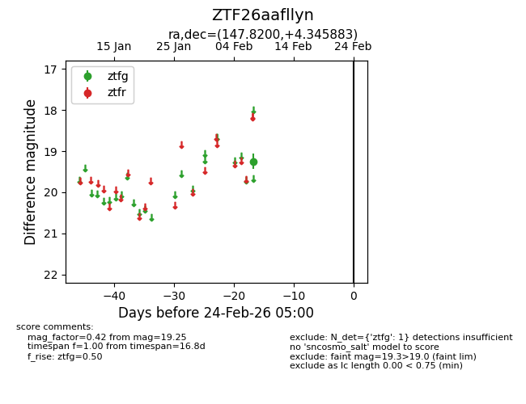
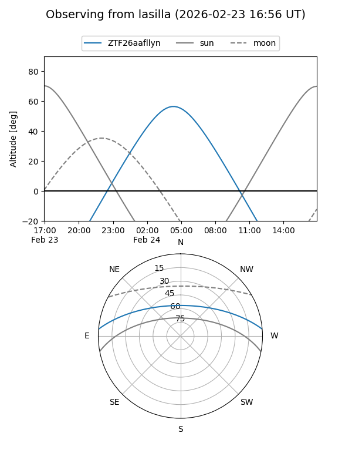
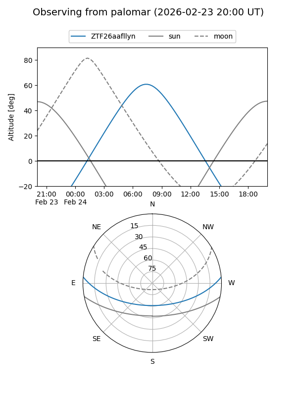

ZTF26aafllyn
Target ZTF26aafllyn at 2026-02-24 09:08
Aliases and brokers:
FINK: link
Lasair: link
ALeRCE: link
alt names
ZTF26aafllyn (ztf,fink_ztf)
Coordinates:
equatorial (ra, dec) = 147.8200,+4.34588
equatorial (HMS+DMS) = 09:51:16.80,+04:20:45.18
galactic (l, b) = (232.7192,+41.42413)
Flags:
Photometry:
last ztfg=19.25
1 ztfg detections
Lightcurve

Visibility


Additional plots